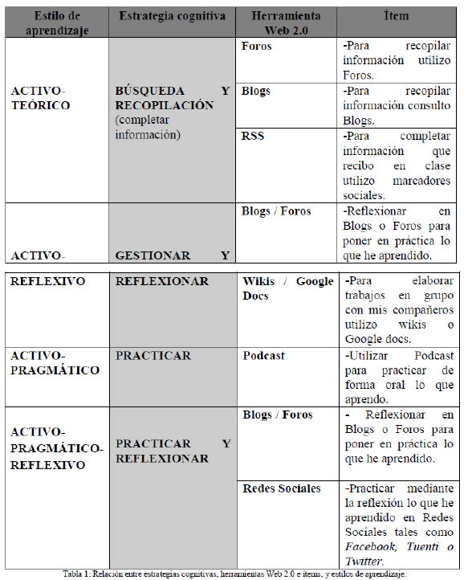

6 Hizkuntzen irakaskuntza estrategiak

Hizkuntzen ikaskuntzaren gainean hainbat zalantza eta galdera etortzen zaizkio irakasle zein ikasleari, askotan antzerako erantzuna izaten dutena
Irakasleenak:
Ikasle txarra da
edo
Oso motibatuta dago
edo
Ez dauka motibaziorik
edo
Zergatik ateratzen ote ditu horrelako nota txarrak?
edo
Zergatik ikasten du hain erraz horrek?
Ikasleenak:
Ez dut ondo entzuten
edo
Gogaituta nago akatsekin
edo
Zaila da hizkuntza honetan aritzea!
Eta asko-askotan, galdera guztien ardatza estrategiak eta motibazioak zehazten dute!
6.1 Testuingurua
80ko eta 90eko hamarkadetanko eredu psikopragmatikoari jarraituz:
Teoria kognitiboen (ikaskuntzari buruzkoak) eta konstruktibisten garaia da, estrategiez jabetzea komunikazio egoeretan nahiz autonomiaren garapena lortzea izan dira helburuak. Ekintza metakognitiboak bultzatzen dira.
M.L. Villanueva, 1997: 82- 84
Hizkuntzak ikasten dituen ikaslea ez da subjektu pasiboa
- Zenbait ezaugarri propio ditu ikastunak:
- sinismenak,
- beharrizanak,
- motibazioak,
- estilo kognitiboa,
- izaera,
- …
- Prozesu horretan gaitasunak garatzeko eta trebetasunak lantzeko zenbait prozedura egiten ditu (Cuq, 2003; Legendre, 1993; Tardif, 1992; Stern, 1983):
- Planak
- Buruko ariketa konszienteak, ez konszienteak eta erabat konszienteak
- Arazoak konpontzeko ekintza kognitiboak portaerak, ekintza funtzionalak
Prozedurok ikas-estrategiak definitzeko erabili dira
Ikasleak bere ikaskuntza era autonomoan eta aktiboan hobetzeko erabiltzen dituen prozedurak dira ikas-estrategiak
–Oxford, 1989
Egoera horiei aurre egiteko metakognizioa, kontzientzia estrategikoa eta esperientzia praktikoa lantzeko bidea ireki da eta honako ideia honi garrantzia ematen hasi zaio: ikasleei ikasten irakastea da irakasleak egin beharreko lana, bakoitzaren ikaskuntza-prozesua kontuan hartuaz eta landuaz (Roy, 1991), horretarako honako pausuak proposatzen dira:
- Ikasleak ezagutu behar ditu
- Hizkuntzaren ikaskuntzaren planifikazioa egiteko ikasleek zer helburu eta estrategia dituzten jakin behar du.
- Ikasgelako interbentzioa egiteko zer egoera diren egokienak jakin behar du irakasleak
- Ebaluazioa egiteko, zer baliabide dauden jakin behar du, ikasleen aurrerapena eta emaitzak ikusteko
6.2 Estrategia motak
- Motibazio estrategiak
- Ikas estrategiak
- Komunikazio estrategiak
Motibazioa gaur egun irakasleek aurrean daukaten erronkarik konplexu eta handiena da, zalantza barik
–Scheidecker eta Freeman, 199: 116
6.2.1 Motibazio estrategiak
Zer diren:
Gizakiarengan helburuak kontuan hartuta portaera positiboa bultzatzen duten teknikak, nahita sortutako motibazioa eraginez.
–Dörnyei, 2003: 40
Jarraitu beharreko irizpideak:
- Motibaziorako oinarrizko baldintzak sortzea.
- Hasierako motibazioa sortzea.
- Motibazioa elikatu eta babestea.
- Atzera begirako autoebaluazio positiboa bultzatzea.

6.2.1.1 Motibazioaren garrantziaren ondorioz
Irakaskuntzan saiatu behar dugu ikasi behar dutenen motibazioaz ere arduratzen. Horretarako Dörnyeik prestatu eta HABEk euskaratu zuen *Motibazio-estrategiak hizkuntza-ikasgelan artikuluan eskaintzen den irakaslearentzako galdetegia erabil daiteke.

6.2.2 Ikasteko estrategiak eta komunikazio estrategiak
Ikuskera desberdin eta osagarriak zenbaitetan.
Ikasleak komunikazioarekin erlazionatutako arazo bat duenean, eta hizkuntza baliabide nahiko ez dituenean, komunikazio-estrategiak erabiltzen ditu (parafrasia erabiltzea, laguntza eskatzea). Ikertzaile biek adierazten dute komunikazio-estrategien bidez ikasten dela eta, horregatik, bi helburu izan ditzaketela: alde batetik, ikastea; eta bestetik, komunikatzea.
–Faerch eta Kasper (1980)
Oxford-ek (1990), ordea, ez du uste komunikazio-estrategiak terminoa erabiltzea egokia denik, euren funtzioa ikas-prozesuan ez dagoelako argi eta uste du ikaskuntzan laguntzaile bezala besterik ez dutela jokatzen, hau da, ez direla erabakigarriak hizkuntza ikasteko orduan, lagundu egiten dute besterik ez.
O’Malley eta Chamot-ek (1990), aldiz, komunikazio-estrategiek duten garrantzia ez dute ukatzen, eta bi funtzio bereizten dituzte: bata ikastea da, ikas-estrategia, eta bestea komunikazioa, komunikazio-estrategia.
6.2.2.1 Adibidea: plumber
Gerta daiteke ikasleren batek plumber hitza ez ezagutzea eta hori komunikazio-ekintza batean erabili behar izatea.
Zer egingo du ikasleak?
Komunikazio-estrategia bat erabili dezake, hala nola, parafrasia, hoditeria konpontzen duen langilea, adierazi nahi duena esateko.
Momentu zehatz horretarako lagungarri izango zaio, baina helburua hitz hori ikastea baldin bada, beste estrategia bat erabili beharko du. Esate baterako, hiztegian bilatuko du hitza, solaskideari hitza errepikatzea eskatuko dio edota koadernoan idatziko du ez ahazteko (ikas-estrategiak).
Hainbat estrategia erabili ditzake hitza barneratzeko. Estrategia-mota bat edo bestea erabiltzea ikas-estiloaren araberakoa izango da.
6.2.3 Ikas estiloak
Zer dira? Ikas-estrategiekin zerikusirik ote dute?
Erabili diren definizio batzuk dira hurrengoak:
Informazioa prozesatzeko erak
–Smith (1988)
Ikasteko gaitasunak genetikak, inguruak eta norberaren eskarmentuak baldintzatuak dauden ezaugarriak
–Kolb (1984)
Ezaugarri afektiboen, joera psikologikoen eta ezagutza-ezaugarrien multzoa
–Rumiche-Chávarry (2013)
Argigarria da Estebanek eta Ruizezk 1996an zehaztutakoa:
Ikas estrategien bidez, ikas estiloak antzeman ditzakegu
–Esteban eta Ruiz (1996:121-122)
6.2.3.1 Ikas-estiloak
Aurrez Oxfordek egindako lanean (1993) oinarrituta, Pikabeak (2002) egindako zerrenda dakargu, ikasleen ikas-estiloen hurrenkera bat aurkezteko.
- Zentzumenak erabiltzen dituzten estiloak
- Ikuslea Ikusiz hobeto ikasten duenari deritzo: bideoak, grafikoak, liburuak
- Entzulea Entzunez eta mintzatuz hobeto ikasten duenari deritzo: eztabaidak, audiozintak, rol-jokoak…
- Egilea Ekinaz ikasten hobeto ikasten duenari deritzo: mugimenduzko jokoak, esku-lanak, etab.
- Jendearekin duten harremanaren araberakoa:
- Konparakoia.
Gustuko ditu hartuemanak, eztabaidak, rol-jokoak…
- Konparakoia.
- Barnerakoia
Gustuko du bakarka, bere kasa edo gertukoekin ikastea - Norabideen arabera
- Intuitiboa Gustuko ditu abstrakzioa, orokortzea eta geroaldia
- Zehatza eta sekuentziala Gustuko ditu zehaztasuna, orainaldia eta urratsez urrats aritzea.
- Ariketa moten arabera
- Ariketa itxi zalea Gustuko ditu ariketa zehatz eta oso arautuak: azpimarratzea, egituraketak, planifikazioak…
- Ariketa ireki zalea Gustuko ditu egoera ez egituratuak: informazioa jasotzea, era ez sistematikoan ikastea…
- Ideiak tratatzeko moduaren arabera
- Globala Globaltasuna ezagutzea du gustuko: ideia nagusiak biltzea, esanahiak asmatzea, istorioen hasierak edo bukaerak asmatzea; hitz guztiak ezagutu ez arren komunikatzea du gustuko.
- Analitikoa Gustuko ditu logika eta xehetasunak: esaldi eta hitzak zatitu eta txikitzea, arauak aztertzea eta alikatzea
6.2.3.2 Ikas-estrategiak
Horiek zerrendatzeko O’Malleyk eta Chamotek (1990) egindako tipologia erabiliko dugu:
- Estrategia metakognitiboak:
- Ikas-prozesuari buruzko gogoeta.
- Ikasteko prestakuntza.
- Ikas-ekintzen kontrola.
- Autoebaluazioa.
- Estrategia kognitiboak:
- Gaiarekiko elkarreragina.
- Gaiaren manipulazioa.
- Estragegia sozio-afektiboak:
- Beste pertsona batekiko elkarreragina.
- Alde afektiboaren kontrola.
Klasean egin beharreko ariketa
Teorian eta galdetegiko erantzunetan oinarrituta, erantzun galderok:
- Zein da taldean gailentzen den ikas-estiloa?
- Zeintzuk ikas-estrategia erabiltzen dituzue gehien? Eta gutxien?
Sortu grafikoa eta azaldu.
6.2.4 Ikas-estrategiak lantzeko proposamenak
Proposamen ugarien artean, hona batzuk, Etxeberria eta Garay (2012) artikulutik ekarrita:

Beste proposamen bat egin zuten O’Malleyk eta Chamotek (1994)
- Prestakuntza fasea
- Ezagutza metakognitiboa garatu. Hizkutza-ariketa laburrak taldean egin eta nola egin duten azaldu.
- Aurkezpena
- Ikas-estrategiak modu esplizituan irakasten dira, zer diren eta nola erabili.
- Praktika
- Ariketen bidez ikas-estrategien erabilera jarduera ezberdinetan txertatzen da.
- Ebaluazioa
- Galdeketa erantzun
–
Fase horietako adibide batzuk izan litezke:
6.2.4.0.1 Aurkezpena:

A. Chamot eta M. O’Malley, 1994
6.2.4.0.2 Praktikarako proposamena:
- Ikaskuntza kooperatiboa
- Berdinen arteko tutoretza
- Zientzia esperimentuak
- Matematika problemak
- Ikerkuntza proiektuak
- Erreportajeak
- Literatura
6.2.4.0.3 Adibideak
Topatu zure bidea jarduera
Entzutezko ulermena lantzen den ariketa honetan mapa batean ibilbide bat adierazteko eskatuko zaie ikasleei.
Ariketa hau egiteko estrategia hauek erabil daitezke:
- zuzeneko estrategiak:
- praktikatzea
- galdetzea
- irudiak erabiltzea
- zeharkako estrategiak
- arreta jartzea
- Baliabide materiala
- mapa baten fotokopia
- Denbora
- 20 minutu
- Nola egin
- leku baten mapa lortu. Irakasleak bere mapan ibilbide batmarkatuko du, gero ikasleei nora joan behar duten azalduko dieinguruko lekuak, jendea… aipatuz.
Oxford, 1989: 106
Esanahia asmatzea irakurtzen ari diren testu batean.
Ariketa honek ikasleei irakurtzen ari diren testu baten esanahia asmatzen laguntzeaz gain, nolaasmatu duten azaltzen ere laguntzen die.
- Baliabide materiala
- irakurtzeko testu-zatiak.
- Denbora
- 30-50 minutu irauten du.
- Nola egin
- irakasleak ikasleei asmakizunak hainbat hizkuntzatan egingo dituztela azalduko die. Gero,orri bat instrukzioekin eta irakurri behar dituzten testu-zatiekin emango die. Ikasleak, testu-zatiak irakurri ondoren, esanahi orokorra asmatzen ahaleginduko dira. Bukatzeko, ikasleek R. Oxford-ekproposatzen dituen galdera hauek erantzun beharko dituzte:
- Summarize the meaning of each passage in one sentence
- How well did you understand the meaning of each the passages above Which passages gave you the most trouble, and why?
- If you did not understand certain words, which ones werw they?
- Did you try to guess the meaning of unknown or unclear words? If so, how often? What are some examples of wunknown words you were able to guess? Whatt information did you use to make your guesses?
- What other information sources might you hvave used to guess the meanings? List as many sources as you can think of.
- Did you need tto know (or guess) the meanings of all the words in a passage in order to know (or guess) the overall meaning of the whole passage? In other words, do you need to get the details in order to get the general idea?
Oxford, 1989: 112
Irudiekin asmatzen Ariketa honek ikasleari irudiak erabiliz asmatzeko estrategiak praktikatzen lagunduko dio.
- Baliabide materiala
- hitzik gabeko komiki bat.
- Denbora
- 10-30 minututan egin daitekeen ariketa da, baina erabiltzen diren komikien kopuruaren arabera, denbora hori aldakorra izan daiteke.
- Nola egin
- ikasleek hitzik gabeko komikietako hutsuneak xede hizkuntzan bete beharko dituzte. Irudiak hutsuneak betetzeko orduan erabilgarriak izan daitezke.
Oxford, 1989: 112
6.3 Erreferentziak
Chamot, A. U., & O’Malley, J. M. (1994). The CALLA handbook: implementing the cognitive academic language learning approach /. Reading, Mass.: Addison-Wesley Pub. Co.,.
Cuq, J.-P. (2003). Dictionnaire de didactique du français langue étrangère et seconde. Paris: Clé International.
Cyr, P. (2000). Estrategiak bigarren hizkuntza baten irakaskuntzan. (B. Urkizu, Itzul.). Donostia: Habe.
Dörnyei, Z. (2003). Motibazio-estrategiak hizkuntz ikasgelan. (A. I. Morales, Itzul.). Donostia: Habe.
Etxebarria, A. (2008). Estrategiak hizkuntzen ikaskuntzan eta irakaskuntzan: M. O’Malley-ren eta A. Chamot-en ekarpena. Litterae vasconicae: euskeraren iker atalak, (10), 241–279.
Etxebarria, A., & Garay, U. (2012). Estilo de aprendizaje basado en el uso de estrategias cognitivas por medio de aplicaciones virtuales. Learning style based on the use of cognitive strategies by virtual applications. In V Congreso Mundial de Estilos de Aprendizaje. Santander. Berreskuratua https://dialnet.unirioja.es/servlet/articulo?codigo=4636744-(e)tik
Færch, C., & Kasper, G. (1980). Processes and Strategies in Foreign Language Learning and Communication. Interlanguage Studies Bulletin, 5(1), 47–118.
Kolb, D. (1985). Learning style inventory. Boston, MA: McBer and Company.
Legendre, R. (1993). Dictionnaire actuel de l’éducation. Paris: Guérin. Berreskuratua https://dspacecdc-test.inlibro.net/xmlui/handle/11515/5065 -(e)tik
Oxford, R. L. (1990). Language Learning Strategies: What Every Teacher Should Know (1. arg.). Heinle ELT. Berreskuratua http://gen.lib.rus.ec/book/index.php?md5=D35AD86CE0610D7EC0AD25197FB3BBE4 -(e)tik
Pikabea, I. (2002). Ikasle helduen ikas-estiloak eta ikas-estrategiak euskararen ikaskuntzan eta erabilera ohiturak ikasgelatik kanpo: interventzio-programa bat (PhD). Euskal Herriko Unibertsitatea, Donostia. Berreskuratua http://www.euskara.euskadi.net/appcont/tesisDoctoral/PDFak/Inaki_Pikabea_TESI.pdf-(e)tik
recherche, résultats de. (2003). Dictionnaire de didactique du français langue étran- Livre. Paris: Clé International.
Ruiz, J. C., & Albert, M. E. (1996). Presentación del tema monográfico ¿Estrategias y estilos de aprendizaje?. Anales de psicología, 12(2), 121–122.
Rumiche-Chávarry, R. del P. (2013). Los estilos de aprendizaje y el uso de la plataforma virtual por los estudiantes de la facultad de educación de la universidad católica Santo Toribio de Mogrovejo (Doktorego-tesia). Universidad de Málaga. Berreskuratua https://dialnet.unirioja.es/servlet/tesis?codigo=132172-(e)tik
Scheidecker, D., & Freeman, W. (1999). Bringing Out the Best in Students: How Legendary Teachers Motivate Kids. New York: Skyhorse Publishing.
Smith, R. M. (1984). Learning How to Learn. Milton Keynes: Open University Press.
Stern, H. H. (1984). Fundamental concepts of language teaching. Oxford: Oxford University Press.
Tardif, J. (1992). Pour un enseignement stratégique. L’apport de la psychologie cognitive. Montreal: Logiques.
Villanueva, M. L., & Navarro, I. (1997). Los estilos de aprendizaje de lenguas: un estudio sobre las representaciones culturales y las interacciones de enseñanza-aprendizaje. Castellón: Universitat Jaume I.
Laugarren jarduera
Jarduera hau klasean azalduko da ondo. Baina, despistatuentzat lehenengo pausuak:
- Aberiguatu (eta definitu)
- Zer den bideotutoriala
- Zein ezaugarri izaten dituen
- Nolako motak dauden
- Era desberdinetakoen adibide itxurosoak aurkitu